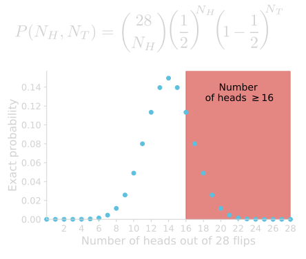

Life Sciences 40
Lecture 4:
Introduction to the Bootstrap
Khris Griffis
Actually, 99% of this lecture is from Dr. Calmettes.
He did such a fantastic job that I didn't' want to try to top it!
Last time...
Visualizing your raw data is the first step to responsible statistics.
We use specific terms when describing the shape, central tendency and spread of our data.
Presenting categorical data and quantitative data is as simple as a histogram and dotplot, or beeswarm, or box plot...
Shape
Central tendency
Spread
Statistical Inference
Significance
Did my result happen by random chance? Would it be surprising if it did? How surprising?
Testing and Simulating the NULL HYPOTHESIS
How likely was the observed relative frequency, i.e. propportion, to happen under the null hypothesis? p-value
Constructing the NULL
It is mathematically possible to use combinatorics and calculate the probability of seeing a binomial result by chance. $$p({\color{red}k} | n)=\frac{n!}{{\color{red}k}!(n-{\color{red}k})!}p^{{\color{red}k}}(1-p)^{n-{\color{red}k}}$$

However, we can use computer simulations to actually perform the binomial-like experiment and calculate a more realistic, i.e. empirical, view of the result.
for i in range(10000):
flips = sample(["heads","tails"],16); # flip coin 16 times
props[i] = sum(flips == "heads") # count 'heads' and store
pvalue = sum(props >= 15) / 10000
Let's look at a proportion we can relate to:
Are the UCLA Bruins better than the USC Trojans at basketball?
Based on these data, can we say that the UCLA Bruins are better than the USC Trojans at Basketball?
Bruins vs Trojans (Basketball)
What are the observational units?
Each UCLA-USC basketball game
What is the variable measured?
Is it Categorical or Quantitative?
Whether or not UCLA won the game (categorical)
We are interested in investigating whether the UCLA Bruins are better
than the USC Trojans at
basketball, and we think they are.
Alternative hypothesis:When they are playing against
the Trojans, the Bruins are more likely to win a game
($\pi>0.5$).
What is the null hypothesis in this investigation?
UCLA and USC are equally likely to win a game ($\pi=0.5$).
The recorded proportion of victories of the Bruins over the 249 games
could be explained by chance alone.
UCLA-USC games simulation
We know that the Bruins won 140 out of 249 games against USC.
What is the observed statistic?:
Proportion of UCLA wins:
$\hat{p}=\frac{140}{249}=0.562$
If UCLA and USC were equally likely to win a game, would it be surprising to observe $\hat{p}\geq 0.562$ for UCLA over 249 games?
We can use simulations to investigate whether this provides us with strong enough evidence against the null and if the proportion of victories of the Bruins over the Trojans is statistically significant.
Single simulation?
249 random drawings of 0 or 1
Statistic of interest?
proportion of 1 (win) in the sample
Number of simulations?
10000
UCLA-USC games simulation
We know that the Bruins won 140 out of 249 games against USC.
What is the observed statistic?:
Proportion of UCLA wins:
$\hat{p}=\frac{140}{249}=0.562$
If UCLA and USC were equally likely to win a game, would it be surprising to observe $\hat{p}\geq0.562$ for UCLA over 249 games?
10000 simulations
of 249 game outcomes
(win, $\pi=0.5$)
| Simulation # | Random sample ($n=249$) | sample $\hat{p}$ | |||||||
|---|---|---|---|---|---|---|---|---|---|
| 1 | 1 | 0 | 0 | ... | 1 | 0 | 0 | 1 | 0.504 |
| 2 | 0 | 0 | 0 | ... | 0 | 1 | 0 | 0 | 0.531 |
| 3 | 1 | 1 | 0 | ... | 0 | 1 | 1 | 1 | 0.486 |
| ... | ... | ... | |||||||
| 9999 | 0 | 1 | 1 | ... | 0 | 0 | 0 | 1 | 0.497 |
| 10000 | 0 | 1 | 1 | ... | 0 | 1 | 1 | 0 | 0.519 |
UCLA-USC games simulation results
Where is it centered?
$\pi=0.5$
(null hypothesis)
What do we need to count?
How many simulations have $\hat{p}\geq0.562$
Out of the 10000 simulations, 272
resulted in $\hat{p}\geq0.562$
$\textrm{p-value}=\frac{272}{10000}=0.00272$
We have strong evidence against the chance model
What influences the p-value?
So far we've looked at a measure of the strength of evidence (p-value). However, we've not yet formally looked at what factors impact the strength of evidence.
In other words, why is the strength of evidence (measured by p-value) sometimes strong and sometimes weak or non-existant?
Difference between the observed statistic and the null hypothesis parameter value ($\hat{p}-\pi_0$)
Difference between the sample statistic and the null parameter value
What if instead of 140 wins out of the 249 games, UCLA had won 155 games of those games? Or what if they only had won 135 of those games?
How would the number of UCLA wins in the sample impact our strength of evidence against the null?
Intuitively, the more extreme the observed statistic, the more evidence there is against the null hypothesis.
Difference between the sample statistic and the null parameter value
If UCLA had won 155 games that is a success rate of
$\hat{p}=\frac{155}{249}=0.622$
$0$ simulations
(p-value < 0.0001)
If UCLA had only won 135 games that is a success rate of
$\hat{p}=\frac{135}{249}=0.542$
$10005$ simulations
(p-value = 0.1)
Difference between the sample statistic and the null parameter value
The further away the observed statistic is from the mean of the null distribution, the more evidence there is against the null hypothesis.
What influences the p-value?
So far we've looked at a measure of the strength of evidence (p-value). However, we've not yet formally looked at what factors impact the strength of evidence.
In other words, why is the strength of evidence (measured by p-value) sometimes strong and sometimes weak or non-existant?
Difference between the observed statistic and the null hypothesis parameter value ($\hat{p}-\pi_0$)
Sample size
Sample size
What if the relative proportion of basketball wins of UCLA over USC (0.562) was the result of 124 games instead of 249? Or what if it was obtained from 498 games (twice as many)?
How would the sample size, for the same observed statistic, impact the strength of evidence against the null?
Do you think that increasing the sample size would:
- increase the strength of evidence?
- decrease the strength of evidence?
- or have no impact on the strength of evidence?
Intuitively, it seems reasonable to think that as we increase the sample size, the strength of evidence against the null hypothesis will increase. If the same proportion of UCLA wins had been observed over more games, we would have more knowledge about the truth.
Sample size
Effect of changing the sample size (number of UCLA-USC games played)
on the null distribution.
The greater the sample size, the less variability in the sample
statistic
sample size decreased to 124 ($\simeq$ half as many)
original observation
sample size 249
sample size increased to 498 (twice as many)
Sample size
As the sample size increases (and the value of the observed statistic stays the same), the strength of evidence against the null hypothesis increases.
Notes on the sample size (1)
The bigger the sample size, the more reliable ("trustable") the observed statistic will be (less variability in the sample statistic from sample to sample)
If you are trying to pass a true/false test (let's say 60% or higher) but know NOTHING about what is going to be on the test, would you rather have more questions or fewer questions on the test?
- YOU, the student, would rather have fewer qestions. If there was only one question on the test, you would have a 50% chance of passing!
- The teacher would rather have more questions on the test because the more questions on the test, the more likely the outcome on the test will be close to 50% (just guessing) and the less likely the students would be to "get lucky" and pass the test by just guessing.
Notes on the sample size (2)
As the sample size changes, the observed statistic will likely change as well
Importantly, we can't automatically assume that if we collect more data and have a bigger sample size the strength of evidence will increase (smaller p-value), because if we collect more data, our observed statistic will almost always change as well.
If UCLA and USC are playing more games, the proportion of wins by UCLA won't be exactly 0.562 forever.
What influences the p-value?
So far we've looked at a measure of the strength of evidence (p-value). However, we've not yet formally looked at what factors impact the strength of evidence.
In other words, why is the strength of evidence (measured by p-value) sometimes strong and sometimes weak or non-existant?
Difference between the observed statistic and the null hypothesis parameter value ($\hat{p}-\pi_0$)
Sample size
Whether we do a one- or two-l-sided test
One-sided v. Two-sided
What if we were wrong and instead of UCLA being better than USC at basketball, it was USC that was better?
Currently, as we've stated our null and alternative hypotheses
we haven't allowed for this possibility:
- The null hypothesis says that UCLA is as good as USC at basketball (the two teams are equally likely to win a game)
- The alternative hypothesis says that UCLA is better than USC at basketball (UCLA more likely to win a game)
- There is no mention of USC being possibly better than UCLA (UCLA less likely to win a game)
$\pi=0.5$
$\pi>0.5$
$\pi<0.5$
for UCLA
This type of alternative hypothesis is called "one-l-sided" because it only looks at one of the two possible ways that the null hypothesis could be wrong.
One-sided v. Two-sided
If we only consider the possibility that UCLA can win, this way of formulating our altenative hypothesis could be considered too narrow and too biased towards assuming that we are correct ahead of time.
A more objective approach would be to conduct a "two-l-sided" test, which allow all the possibility of the null hypothesis to be wrong.
In this case our hypothesis would be:
- Null hypothesis: UCLA and USC are equally good at basketball. (the two teams are equally likely to win a game)
- Alternative hypothesis: UCLA and USC are not equally good at basketball (UCLA and USC are not equally likely to win a game)
$\pi=0.5$
$\pi\neq0.5$
One-sided v. Two-sided
We create the randomization distribution
by assuming the null hypothesis is true.
The alternative hypothesis does not play any role in this process
as the randomization samples depend only on the null hypothesis.
However, the alternative hypothesis is important
in determining the p-value because it determines
which tail(s) to use to calculate the p-value.
If the alternative hypothesis specifies a particular direction, we refer to these as right-tailed or left-tailed tests, depending on whether the alternative hypothesis is greater than or less than, respectively.
Otherwise, we are only looking to see if there is a difference without specifying in advance in which direction it might lie. These are called two-tailed tests.
The definition of “more extreme” to compute a p-value depends on whether the alternative hypothesis yields a test that is right-, left-, or two-tailed.
One-sided v. Two-sided
Because the p-value for a two-l-sided test
is about twice as large
as that for a one-l-sided test, two-l-sided tests provide less evidence against
the null hypothesis.
However, note that two-l-sided tests are used more often in
scientific practice.
The limits of the p-value
1) Lots of factors can influence the p-value
Difference between the observed statistic and the null hypothesis parameter value ($\hat{p}-\pi_0$)
Sample size
Whether we do a one- or two-l-sided test
2) The p-value does not give information about how much different from the null our observed statistics is
A small p-value provides evidence against the null hypothesis (strength of evidence), but does not tell anything about the true value of the population parameter from which we obtained our sample
Inferences about the population parameter
Statistical inference is the process of using data from a sample to gain information about the population.
What we really want to know, is how close to the true population parameter
the statistic we calculated from the sample is.
We want to know about the population parameter, not the sample statistic.

Inferences about the population parameter
If we had strong evidence that the probability of UCLA to win a game against USC was larger than 0.5, what we would really want to know would be "how much larger than 0.5?", not just "is it different from 0.5?"
In our case, we did not find strong evidence that UCLA was more
likely than USC to win a game (two-tailed p-value >0.05).
But at least it would be interesting to know about
the true probability
for UCLA to win a game against USC.
In other words, if UCLA and USC
were to play an infinite number of basketball games,
what parameter $\pi$ would we observe on the long-run?
How could we get an idea about the true value of the probability of UCLA to win a game against USC?
Inferences about the population parameter
We know how to test our statistic against a specific parameter value for our null hypothesis (0.5).
What if we were testing against a different null-hypothesis parameter value? Or over a full range of null hypothesis parameters?
| $\hat{p}$ | 0.562 | ||||||
| $\pi_0$ | 0.48 | 0.5 | 0.55 | 0.58 | 0.6 | 0.62 | 0.65 |
Inferences about the population parameter
| $\hat{p}$ | 0.562 | ||||||
| $\pi_0$ | 0.48 | 0.5 | 0.55 | 0.58 | 0.6 | 0.62 | 0.65 |
249 game outcomes
(win, $\pi_0=0.48$)
249 game outcomes
(win, $\pi_0=0.65$)
| Simulation # | Random sample ($n=249$) | sample $\hat{p}$ | |||||||
|---|---|---|---|---|---|---|---|---|---|
| 1 | 0 | 1 | 0 | ... | 1 | 0 | 0 | 1 | 0.476 |
| 2 | 1 | 1 | 1 | ... | 0 | 1 | 1 | 0 | 0.498 |
| 3 | 1 | 1 | 0 | ... | 0 | 1 | 1 | 1 | 0.482 |
| ... | ... | ... | |||||||
| 9999 | 0 | 1 | 0 | ... | 0 | 1 | 0 | 1 | 0.481 |
| 10000 | 0 | 1 | 0 | ... | 0 | 1 | 1 | 0 | 0.509 |
| Simulation # | Random sample ($n=249$) | sample $\hat{p}$ | |||||||
|---|---|---|---|---|---|---|---|---|---|
| 1 | 1 | 0 | 1 | ... | 1 | 0 | 1 | 1 | 0.649 |
| 2 | 0 | 1 | 1 | ... | 0 | 1 | 0 | 0 | 0.682 |
| 3 | 1 | 1 | 1 | ... | 0 | 0 | 0 | 1 | 0.628 |
| ... | ... | ... | |||||||
| 9999 | 0 | 0 | 1 | ... | 0 | 0 | 1 | 1 | 0.617 |
| 10000 | 1 | 1 | 1 | ... | 0 | 1 | 1 | 0 | 0.696 |
Inferences about the population parameter
Inferences about the population parameter
| $\hat{p}$ | 0.562 | |||||||||||
| $\pi_0$ | 0.48 | 0.5 | 0.55 | 0.58 | 0.6 | 0.62 | 0.65 | |||||
Our observed statistic
would be plausible if our sample had been drawn from
population distributions with parameter $\pi$
ranging at least from $0.5$ to $0.62$
null hypothesis not rejected
at the two-tailed 0.05 level.
The long-run probability $\pi$ for UCLA to win a game against USC is in this range estimate.
Inferences about the population parameter
Key idea:
This interval of plausible values we just
obtained is called a
95% confidence interval for $\pi$, the
long-run probability for UCLA to win a game against USC. The 95% value
is called the confidence level, and is a
measure of how confident we are about our interval containing the
true population parameter.
Note:
We can also actually use the 95%
confidence interval as a
measure of the strength of evidence!
if the parameter of the
null distribution is in the interval, then we cannot
reject the null hypothesis (we cannot reject that $\pi=\pi_0$)
Inferences about the population parameter
Right now, we only have a rough idea of the boundaries of the 95% confidence interval (we only tested a limited quantity of plausible values).
- we could test against other values. But it would be time consuming, and still limited to the values we would test.
- what if we could directly get this 95% confidence interval from our sample?
The Bootstrap
The bootstrap is
a resampling method that uses only the data in the original sample
(the only data we know about).
It can be used for estimating the variability
of a statistic and to approximate
a sampling distribution using just the
mutedBluermation in that one sample.
Think about it:
The sample is the only mutedBluermation we know to be true about
the population it has been drawn from.
The best estimate for a population parameter ($\pi$) is the relevant sample
statistic ($\hat{p}$).
We can expand this idea and consider the sample as our best
estimate for the underlying population.
Drawing a bootstrap sample
Ideally, we’d like to sample repeatedly from the population to create a sampling distribution
reapeatedly randomly draw 249 other
UCLA-USC games from the population and
calculate another value for our statistic
How can we make the sample data look like data from the entire population?
We assume that the population of all the UCLA-USC basketball games is basically just many, many copies of the games in our original sample (n=249).
Drawing a bootstrap sample
In practice, instead of actually making many copies of the sample and
sampling from that, we use a sampling technique that is equivalent:
we sample with replacement from the original sample.
Once a UCLA-USC game has been selected from the sample,
it is still available to be selected again.
Each UCLA-USC game in the original sample actually represents
many other games with a similar outcome (win or loss).
Each sample selected in this way, with replacement from the original
sample, is called a bootstrap sample.
Note: Recall that the variability of a sample statistic depends on the size of the sample. Because we are trying to uncover the variability of the sample statistic, it is important that each bootstrap sample is the same size as the original sample (n=249).
Generating a Bootstrap distribution
- Generate bootstrap samples
by sampling with replacement
from the original sample, using the same sample size - Compute the statistic of interest
("bootstrap statistic")
for each of the bootstrap samples - Collect the statistics for many bootstrap samples
to create a bootstrap distribution
Generating a Bootstrap distribution
data sample (n=249)
$140$ ones & $109$ zeros
$P(1)=0.562$
$P(0)=0.438$
| 1 | 1 | 0 | 0 | 0 | 1 | ... | 1 | 0 | 1 | 1 | 0 | 1 |
$\hat{p}=0.562$
Interactive bootstrap simulation
- We start with out original proportion of Wins and Losses.
- Then we resample with replacement, meaning each value can be represented more than once, but by random chance.
- After each bootstrap, we calculate the bootstrap proportion $\overset{*}{\theta}_{b} = \frac{W_{b}}{N_{games}}$
- After a large number of bootstraps (say 10,000), we can compute the 95% Confidence interval:
First we sort the bootstraps: $\{\overset{*}{\theta}_{1}< ... <\overset{*}{\theta}_{10000}\}$ then we get the $0.025\times B$ and $(1-0.025)\times B$ values: $CI_{95} = \{\overset{*}{\theta}_{250},\overset{*}{\theta}_{9750}\} | B= 10000$
Bootstrap confidence intervals
Now that we have our Bootstrap sampling distribution, we can compute the confidence intervals at the 95% level.
Where is it centered?
centered at $\hat{p}$
(original observed statistic)
How do we compute the 95% confidence intervals or our population parameter?
We consider the central 95% of the bootstrap statistics
(discard the 2.5% more extreme cases on each side)
We are 95% confident that the true probability of the Bruins to win a game against the Trojans (parameter $\pi$) is lying in the interval $[0.498-0.622]$
Bootstrap confidence intervals
A bootstrap confidence interval at the alpha level, is computed by considering the central (1-alpha) bootstrap statistics of the bootstrap sampling distribution we constructed.
In the sorted array of bootstrap statistics, this corresponds to the statistics at positions:
- $(\frac{\mathrm{alpha}}{2})^{th}$, for the lower confidence interval limit, and
- $(1-\frac{\mathrm{alpha}}{2})^{th}$, for the upper confidence interval limit
If we were were able to get an unlimited number of original samples from the population of UCLA-USC basketball games, and were computing the $alpha$-% confidence interval from each of them, the true probability of UCLA winning a game against USC would be in $alpha$-% of these calculated intervals.
Reporting confidence intervals instead of p-value
Confidence intervals provide mutedBluermation about both:
- strength of evidence
(Is the parameter value we want to test against,
in the interval or not? => 95% confidence interval)
- estimate of the true
parameter value
($alpha$-% of the time our interval will include our true parameter)
In that sense, reporting the $alpha$-% confidence intervals is better than just reporting a p-value, since what we really want to know is the true value of our population parameter, not just if our true parameter is different or not from a particular value.
Versatility of the Bootstrap
- The bootstrap procedure does not require any assumption about
the distribution of your data
(the data sample is the best approximation of the population) -
The bootstrap procedure can be applied to any data
type
(categorical or quantitative variables) -
The bootstrap statistic can be anything you're
interesed in
($\hat{p}$, median, mean, ratio, correlation coefficient, etc ...) -
The bootstrap procedure can be adapted
to replace any
theoretical statistical test
(confidence intervals generation, comparison of groups, etc ...)
Bootstrap regression analysis